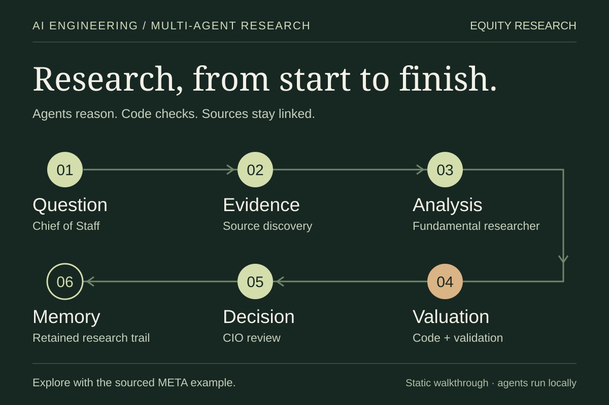
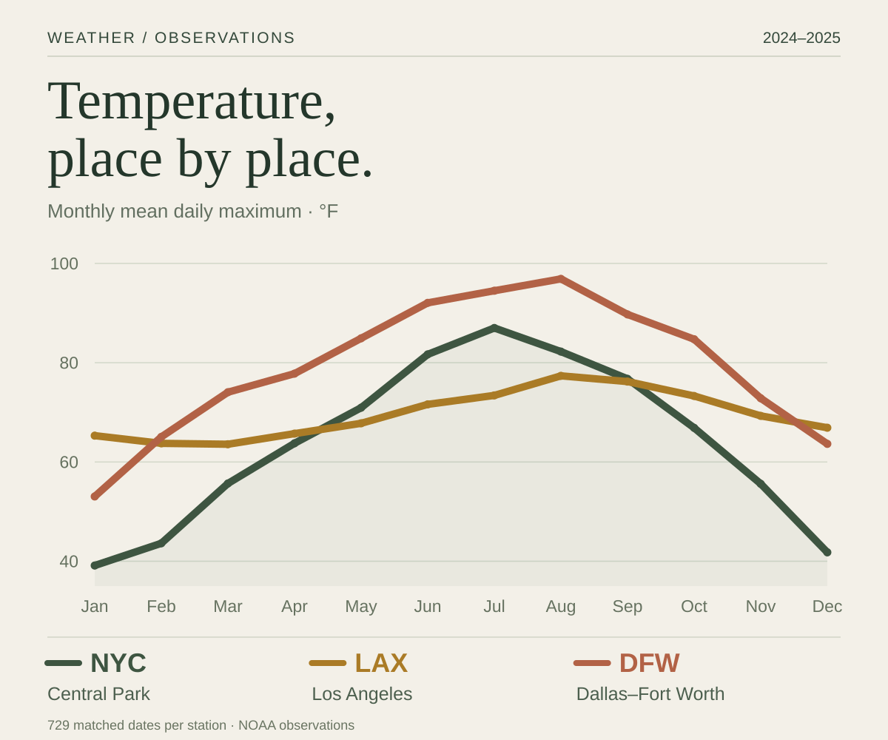
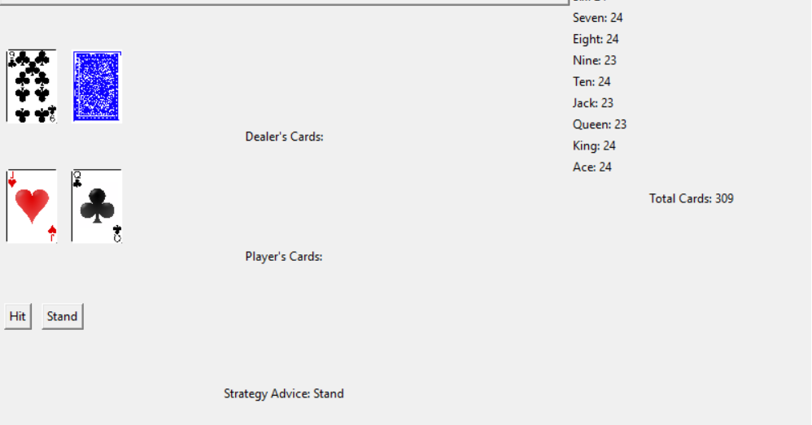
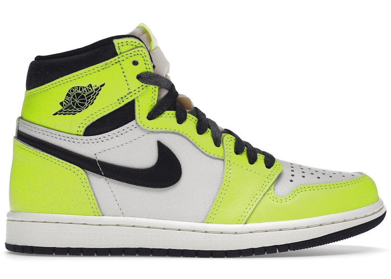
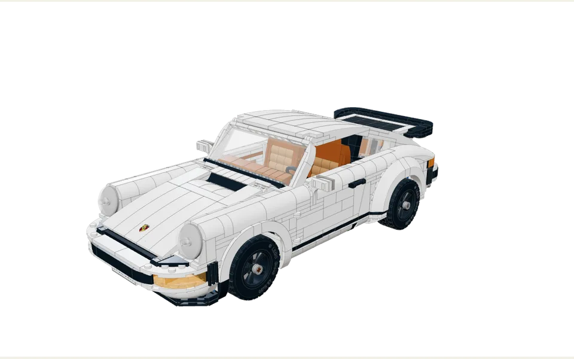

StackAdapt
Product Solutions • Political
I find answers in complex data.
Public launches and partnerships connected to my roles.
Product Solutions • Political
Data Analyst • Partnership Analytics
Make the thinking visible. Explore the evidence, assumptions, and decisions behind things I've built.

Equity Research
A multi-agent AI research system that takes an investment question through source discovery, earnings analysis, valuation, validation, and a final research decision.

NBA game outcomes
An NBA exploration from shot selection to pregame and in-game win probabilities, with chronological validation and an interactive game replay.
Built from my original Boston Celtics Player Analysis repository (opens in a new tab).

Max temperature modeling
Next-day forecasts for New York, Los Angeles, and Dallas, comparing weather features and regional models on a chronological split.

University Twitter analysis
A comparison of language, sentiment, and subjects in public posts from Waterloo, U of T, and Western.

Blackjack simulator
A six-deck desktop simulator with strategy advice, betting mechanics, and a SQLite record of each hand.
A travel log of places, photographs, and the routes between them.
Open travel log ↗ (opens in a new tab)
From KD 7s to Jordan 1s. A look through my sneaker collection.
Teamfight Tactics
Emerald IV (Top 11.51%)
Season 16 · NA · Profile snapshot · August 17, 2026
F1 23
Bahrain Time Trial 1:32.168

Explore the sets I'm building, with interactive 3D models and official instructions.
Open collection ↗ (opens in a new tab)